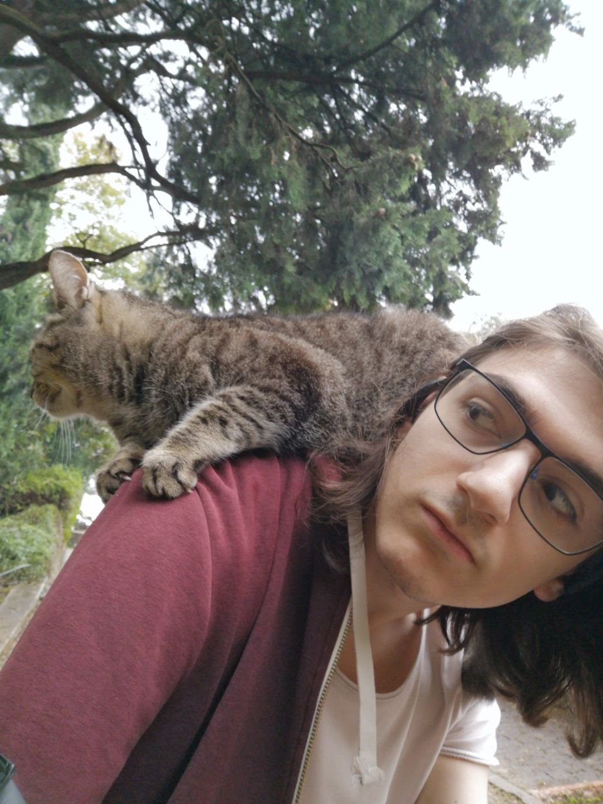
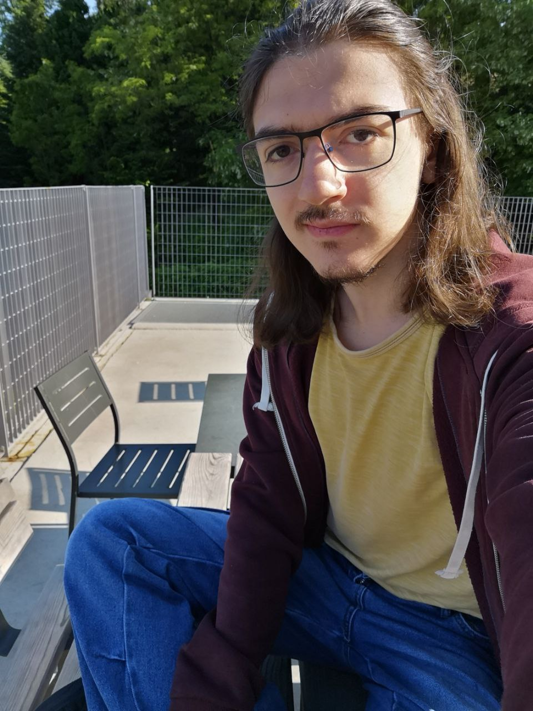

DIEGO ONIARTI
CHI SONO WHO AM I
Studente e appassionato di informatica presso l'università di Trento Computer science student and enthusiast attending the university of Trento


ESPERIENZA EXPERIENCE
Università di Trento - magistrale University of Trento - master
2024 - Ongoing
Continuo il mio studio dell'informatica presso l'università di Trento, nel settore informatico e con un interesse mirato all'ambito delle fondamenta della computazione. I keep studying computer science at Trento's university, in the sector of computational foundations
Università di Trento - triennale University of Trento - bachelor
2021 - 2024
Conseguito la laurea triennale in informatica presso l'università di Trento. Graduated with a bachelor's degree in computer science from the University of Trento.
Web Walley Reimagined
2021
Un evento organizzato dalla Fondazione Bruno Kessler e dall'Istituto Pavoniano Artigianelli di Trento.
Durante la settimana di corso, un gruppo di studenti italiani e statunitensi segue corsi intensivi riguardanti data analisis e machine learning.
Il progetto si chiude con la presentazione del lavoro che gli studenti hanno prodotto in modalità scrum.
An event organized by the Bruno Kessler Foundation and the Pavonian Artigianelli Institute of Trento.
During the week-long course, a group of Italian and American students attend intensive courses on data analysis and machine learning.
The project concludes with a presentation of the work the students produced using scrum methodology.
ITT Buonarroti
2016 - 2021
Ho frequentato l'Istituto Tecnico Tecnologico Michelangelo Buonarroti di Trento. I attended Trento's Buonarroti technical institute.
Progetto PON Cittadinanza Europea European Citizenship PON Project
2019
Un progetto dalla durata di vari mesi in cui un gruppo di studenti di scuola superiore impara il funzionamento dell'unione europea.
Il progetto termina con 3 settimane di scambio culturale ad Amsterdam. In queste settimane gli studenti frequentano una scuola che pratica il metodo Montrssori d'insegnamento.
A multi-month project in which a group of high school students learn about the European Union.
The project concludes with a three-week long cultural exchange in Amsterdam. During these weeks, the students attend a school that practices the Montressori method of teaching.
Team Vincitore di Open Data HackaBot Trentino Winner Team of Trentino Open Data HackaBot
2018
Un hackaton di due giorni in cui diversi gruppi utilizzano open data per sviluppare diverse aplicazioni.
L'obbiettivo dei progetti presentati è quello di innovare il modo in cui l'amministrazione pubblica si interfaccia con cittadini e aziende.
Il gruppo vincitore è scelto da stakeholder e busines locali.
A two-day hackathon in which different groups use open data to develop various applications.
The goal of the submitted projects is to innovate the way public administration interacts with citizens and businesses.
The winning group is chosen by local stakeholders and businesses.
SKILLS
Programmazione Programming
Ho esperienza sia con il paradigma di programmazione procedurale che con quello ad oggetti, oltre a nozioni di programmazione funzionale.
Conosco diversi linguaggi di programmazione tra cui: C, C++, C#, Java, JavaScript, Python, Rust, Cuda
I have experience with both procedural and object-oriented programming paradigms, as well as basic functional programming.
I am proficient in several programming languages, including: C, C++, C#, Java, JavaScript, Python, Rust, and Cuda.
Teamwork
Ho partecipato a diversi progetti di gruppo, tentando sempre di svolgere la mia parte al meglio e di integrarmi con i miei colleghi I have participated in several group projects, always trying to do my part to the best of my ability and to integrate with my colleagues.
Progettazione Software Software Design
Sono capace di leggere e scrivere diagrammi UML utili per l'analisi di requisiti e la progettazione di software conforme ad essi I am able to read and write UML diagrams useful for requirements analysis and software design compliant with them
PROGETTI PROJECTS
Questi sono alcuni progetti a cui ho lavorato principalmente in P5JS e ThreeJs.
Alcuni sono semplici visualizzazioni di algoritmi, mentre altri sono progetti più creativi.
Molti hanno richiami a progetti precedenti nella lista, mostrando come si può espandere su un idea iniziale poco alla volta.
Sto ancora lavorando a scrivere una descrizione o piccolo articolo per ogni uno.
These are some projects I've worked on, mainly in P5JS and ThreeJs.
Some are simple algorithm visualizations, while others are more creative projects.
Many have references to previous projects on the list, showing how you can gradually expand on an initial idea.
I'm still working on writing a description or short article for each one.